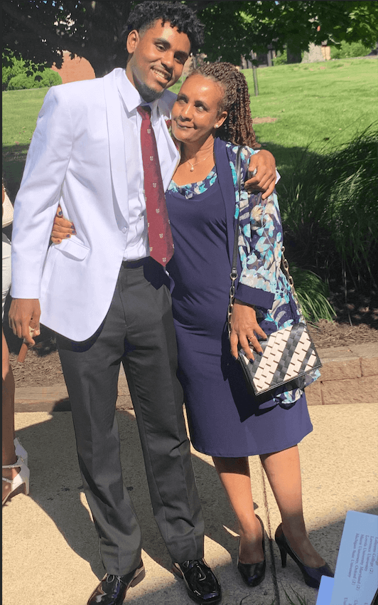

Welcome to my website. In order to see it you must view in full screen
Aspiring Software Engineer
Hi, I'm Nathan Demssie From Washington,DC

About Me
I am a Sophmore Student at Columbia University in the City of New York.
My intended major is Computer Science. I am really interested in
machine learning, artificial intellignece, and Software Development. I am from Washington DC
and in my free time I love to lift weights and play basketball.
Skills
Experience
Education
Resume
Java Data Structures, Object Oriented Programming, Dynamic Programming
Python NumPy, Pandas, Jupyter
HTML & CSS Front-end Web Development
Swift App Development
Columbia University Bachelor in Science in Computer Science. Current-2026
St Anselm's Abbey School Benedictine Scholar. Graduated 2018-2022
Tutor/Junior Aide Tutored and mentored students in a STEM-based program
emphasizing Mathematics, Computer Science, General Science, and Engineering.
LLC Manager Organized a mock LLC called "Crankage ENT" with the hopes of marketing,
producing, and promoting an ep(extended play record) and a cipher for a benefit concert.
Designed and implemented this website using HTML, CSS, and JavaScript. Utilized various transition delays, page divs,
font modifications, hrefs, spans, etc.
2D Single Cell Segmentation (Biomedical Engineering Departmental Project)
Implemented a deep neural network model in Python to segment single cells within baby hamster kidney (BHK) cell cultures.
Train a U-Net model on a dataset to perform single-cell segmentation on Jupyter Notebook using Python.
Use 50 epochs to train a neural network and compare it to the original test set by analyzing the DICE score per epoch.
Determine the best epoch to model the data and compute its performance on test samples with 98.4% accuracy.
Presented the results of the best-performing model to Columbia's Biomedical Engineering Department.
Button Mash
Develop a Piano Tiles clone in C++ using an Arduino, input detection, LED panel, and user interface.
Work within a team of five students weekly and allocate our skills for design, construction, and coding.
Analyzing NYC Air Pollution
Used data published by The City of New York to analyze particulate matter(pm2.5) These matters may appear naturally but in dense cities are caused by traffic and domestic heating(burning of oil and gas). Data set consisted of 1824 measurements for air quality for NYC neighborhoods from 2008-2020. With this data I wrote a tool which enabled a user to query information about their neighborhood within a particular time frame. I also utilized the dataset in order to detect trends in air quality in NYC.